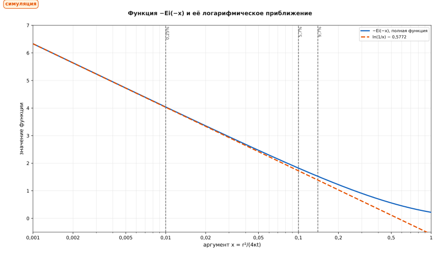

Путь › Как рассчитать давление вокруг скважины › Шаг 38 из 60
Когда достаточно логарифма
В книге: «Плоскорадиальный фильтрационный поток упругой жидкости. Основная формула теории упругого режима фильтрации» стр. 491
Опирается на: шаг 37 «Как вычислить функцию Ei рядом» (предпосылка), шаг 36 «Основная формула упругого режима» (опровергает заблуждение)
Суть
При малом аргументе x = r²/(4κt) функцию −Ei(−x) заменяют на ln(1/x) − 0,5772.
Погрешность зависит от x: 0,25% при x ≤ 0,01, 5,7% при x ≤ 0,1, 9,7% при x ≤ 0,14.
Широкий порог x ≤ 1 у формулы давления не даёт тех же гарантий точности.
Пороговая идея. Область использования упрощения и область гарантированной погрешности — разные вещи. модель
Разбор источника
Определите, где наблюдение, вывод или допущение. Раскройте утверждение, чтобы свериться с ответом и цитатой.
На положительной полуоси интегральная показательная функция быстро убывает от бесконечности к нулю.
Наблюдение · стр. 491
«При изменении аргумента $x$ от 0 до $\infty$ функция $- \text{Ei} (- x)$ быстро убывает от $\infty$ до 0. График этой функции приведен на рис. 23.3. При малых значениях $x$ суммой ряда можно пренебречь, тогда»
Рисунок показывает график интегральной показательной функции.
Наблюдение · стр. 491
«Рис. 23.3. График интегральной показательной функции»
Для малых аргументов суммой степенного ряда можно пренебречь.
Наблюдение · стр. 491
«При малых значениях $x$ суммой ряда можно пренебречь, тогда»
В приближении остаётся логарифм обратного аргумента минус 0,5772.
Вывод · стр. 491
«$$- \text{Ei} (- x) = \ln \frac{1}{x} - 0,5772.$$»
Автор указывает погрешность не выше 0,25% при аргументе не больше 0,01.
Наблюдение · стр. 491
«$$0,25\%, \quad \text{если } x = \frac{r^2}{4 \kappa t} \leq 0,01;$$»
Автор указывает погрешность не выше 5,7% при аргументе не больше 0,1.
Наблюдение · стр. 491
«$$5,7\%, \quad \text{если } x \leq 0,1;$$»
Автор указывает погрешность не выше 9,7% при аргументе не больше 0,14.
Наблюдение · стр. 491
«$$9,7\%, \quad \text{если } x \leq 0,14.$$»
Перед логарифмической формулой давления в источнике записан порог аргумента не больше 1.
Наблюдение · стр. 491
«Следовательно, для значений $r^2/(4 \kappa t) \leq 1$ давление можно определять по формуле»
Как это работает
Поведение функции
При росте x от 0 до ∞ функция −Ei(−x) быстро убывает от ∞ до 0. Её график приведён на рис. 23.3. стр. 491
«При изменении аргумента $x$ от 0 до $\infty$ функция $- \text{Ei} (- x)$ быстро убывает от $\infty$ до 0. График этой функции приведен на рис. 23.3. При малых значениях $x$ суммой ряда можно пренебречь, тогда»
«Рис. 23.3. График интегральной показательной функции»
Упрощение
При малых x суммой степенного ряда можно пренебречь. Остаётся логарифмическая часть: −Ei(−x) ≈ ln(1/x) − 0,5772. стр. 491
«При малых значениях $x$ суммой ряда можно пренебречь, тогда»
«$$- \text{Ei} (- x) = \ln \frac{1}{x} - 0,5772.$$»
Погрешность по порогам
Автор даёт оценки погрешности приближения. При x = r²/(4κt) ≤ 0,01 она не выше 0,25%. При x ≤ 0,1 — не выше 5,7%. При x ≤ 0,14 — не выше 9,7%. стр. 491
«$$0,25\%, \quad \text{если } x = \frac{r^2}{4 \kappa t} \leq 0,01;$$»
«$$5,7\%, \quad \text{если } x \leq 0,1;$$»
«$$9,7\%, \quad \text{если } x \leq 0,14.$$»

Широкий порог
Перед логарифмической формулой давления в источнике записан порог r²/(4κt) ≤ 1. Он шире подтверждённых порогов. У верхней границы приближение даёт уже отрицательное значение, а исходная функция положительна. стр. 491
«Следовательно, для значений $r^2/(4 \kappa t) \leq 1$ давление можно определять по формуле»
Как это делает специалист
Сначала вычисляют безразмерный аргумент. Затем сравнивают его с порогами погрешности. Если x мал и погрешность приемлема, берут логарифмическую формулу. Иначе считают по полной функции. стр. 491
По шагам
Как выбрать формулу
- Вычислите безразмерный аргумент x = r²/(4κt). стр. 491
- Сопоставьте его с порогами погрешности 0,01, 0,1 и 0,14. стр. 491
- При малом x и приемлемой погрешности подставьте ln(1/x) − 0,5772 в формулу давления. стр. 491
Цифры и условия
- При x ≤ 0,01 погрешность не выше 0,25%. стр. 491
- При x ≤ 0,1 погрешность не выше 5,7%. стр. 491
- При x ≤ 0,14 погрешность не выше 9,7%. стр. 491
- Порог x ≤ 1 у формулы давления не подкреплён оценкой погрешности. стр. 491
Формулы
Приближение интегральной показательной функции для малых положительных аргументов. стр. 491
| Обозначение | Что это | Единицы |
|---|---|---|
| $\mathrm{Ei}$ | интегральная показательная функция | безразмерная |
| $x$ | положительный аргумент интегральной функции | безразмерный |
Безразмерный аргумент функции и самый строгий из приведённых порогов точности. стр. 491
| Обозначение | Что это | Единицы |
|---|---|---|
| $x$ | положительный аргумент интегральной функции | безразмерный |
| $r$ | расстояние от оси скважины | м |
| $\kappa$ | коэффициент пьезопроводности | м²/с |
| $t$ | время после пуска | с |
Логарифмическая формула давления, полученная заменой специальной функции её приближением. стр. 491
| Обозначение | Что это | Единицы |
|---|---|---|
| $p$ | давление | Па |
| $r$ | расстояние от оси скважины | м |
| $t$ | время после пуска | с |
| $p_k$ | начальное, вдали от скважины также контурное давление | Па |
| $Q_0$ | постоянный объёмный дебит скважины | м³/с |
| $\mu$ | динамическая вязкость жидкости | Па·с |
| $k$ | проницаемость породы | м² |
| $h$ | толщина пласта | м |
| $\kappa$ | коэффициент пьезопроводности | м²/с |
Частая ошибка модель
Ошибка: Логарифм заменяет специальную функцию с одинаковой погрешностью при любом аргументе.
На самом деле: Автор отбрасывает ряд при малых аргументах и связывает каждую оценку погрешности со своим порогом. стр. 491
Что это значит для данных
Вычисляют безразмерный аргумент и по нему выбирают, можно ли применять логарифмическую формулу для давления.
- Вход
- Радиус, время, пьезопроводность, а для давления также начальное давление, дебит, вязкость, проницаемость и толщина.
- Выход
- Приближённое значение функции и пластового давления.
- Где ломается
- Названные пределы погрешности не следует переносить за соответствующие пороги аргумента.
Где здесь ручной труд специалиста
- Входные данные
- Радиус, время, пьезопроводность, а для давления также начальное давление, дебит, вязкость, проницаемость и толщина.
- Ручные шаги
- Вычислить аргумент, сверить допустимую погрешность, выбрать способ вычисления.
- Точки суждения
- Проверить, к какой величине относятся указанные проценты.
- Время
- Решение о выборе формулы важнее скорости одной подстановки.
- Типичные ошибки
- Перенести оценку ошибки функции на давление или считать её действительной для всего записанного диапазона.
Аналогия модель
Как использовать быстрый приближённый вычислитель только в проверенной области входов.
Где аналогия перестаёт работать: Оценка погрешности относится к специальной функции; для относительной погрешности самого давления важен также его исходный уровень.
Глубже
Почему широкий порог нельзя читать как гарантию модель
В извлечённом тексте перед формулой давления стоит порог 1. У верхней границы этого диапазона логарифмическое приближение уже даёт отрицательное значение функции, хотя исходная функция положительна. Для точного расчёта за подтверждённой областью берите полную функцию.
Рисунки книги к этому шагу
- Рис. 23.3. Рис. 23.3. График интегральной показательной функции стр. 491 (не перерисован — смотрите в книге)
Новые понятия
- Интегральная показательная функция
- Специальная функция из формулы давления, быстро убывающая с ростом положительного аргумента. стр. 491
- Аргумент функции
- Величина, по которой вычисляют значение функции; здесь она безразмерна. стр. 491 модель
- Погрешность приближения
- Отклонение приближённо вычисленного значения от значения исходной функции. стр. 491 модель
Проверь себя
%
Верный ответ: 5,7 %
Автор связывает порог 0,1 с погрешностью 5,7%. Где это в тексте (стр. 491) →
Верный ответ: Нет: оценки погрешности даны только для малых порогов
Каждая оценка погрешности относится к своему порогу. Где это в тексте (стр. 491) →
Источник
Все утверждения шага с дословной цитатой автора и страницей книги (по PDF).
На положительной полуоси интегральная показательная функция быстро убывает от бесконечности к нулю. наблюдение
«При изменении аргумента $x$ от 0 до $\infty$ функция $- \text{Ei} (- x)$ быстро убывает от $\infty$ до 0. График этой функции приведен на рис. 23.3. При малых значениях $x$ суммой ряда можно пренебречь, тогда»
Рисунок показывает график интегральной показательной функции. наблюдение
«Рис. 23.3. График интегральной показательной функции»
Для малых аргументов суммой степенного ряда можно пренебречь. наблюдение
«При малых значениях $x$ суммой ряда можно пренебречь, тогда»
В приближении остаётся логарифм обратного аргумента минус 0,5772. вывод
«$$- \text{Ei} (- x) = \ln \frac{1}{x} - 0,5772.$$»
Автор указывает погрешность не выше 0,25% при аргументе не больше 0,01. наблюдение
«$$0,25\%, \quad \text{если } x = \frac{r^2}{4 \kappa t} \leq 0,01;$$»
Автор указывает погрешность не выше 5,7% при аргументе не больше 0,1. наблюдение
«$$5,7\%, \quad \text{если } x \leq 0,1;$$»
Автор указывает погрешность не выше 9,7% при аргументе не больше 0,14. наблюдение
«$$9,7\%, \quad \text{если } x \leq 0,14.$$»
Перед логарифмической формулой давления в источнике записан порог аргумента не больше 1. наблюдение
«Следовательно, для значений $r^2/(4 \kappa t) \leq 1$ давление можно определять по формуле»
На этот шаг опираются: шаг 43 «Как падает давление около скважины».